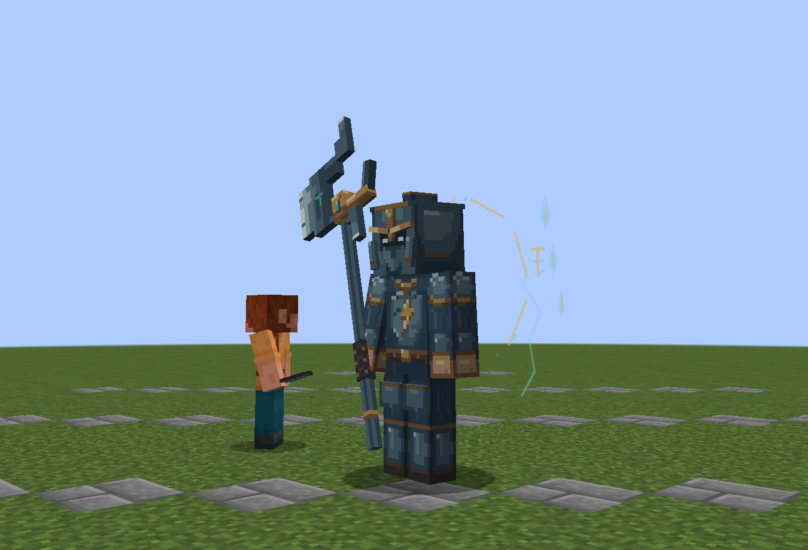
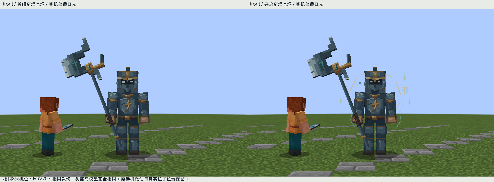
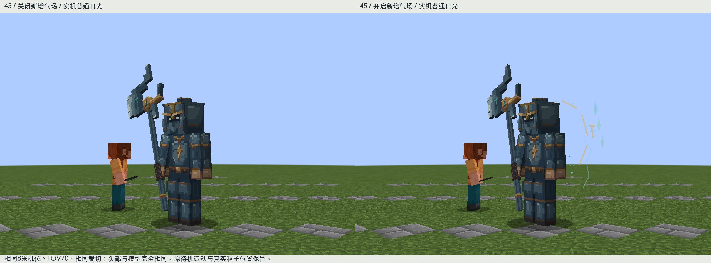

九霄天将：雷霆统帅气场
保留已经认可的V17头盔、面甲和全身模型。这轮增加的是独立客户端光效：肩后古金断环、六枚青白令符光片、缓升光屑，以及胸口雷纹与大戟局部的呼吸亮点。整个头部不新增发光像素。
实际游戏动态 · 无声音

24张连续实机采样，间隔4tick，约4.8秒；普通日光，无外部光影或后期辉光。
关闭 / 开启对照

正面8米玩家视角，同机位同裁切；武器、面部和服装保持清楚。
45度：令环和光片位于肩后，身体雷纹的局部发光跟随实际骨骼。
身上哪些地方在变化
新增128×128透明光效遮罩只有30个有效像素：胸口原有雷纹15个，戟上玉点与短刃段15个。静止时缓慢呼吸，挥击时随原有同步挥手进度增强，死亡时关闭。没有染亮整套护甲，也没有修改基础PNG或添加身体零件。
待机普通设置每4tick发出3枚小光屑；攻击时最多5枚（仍受全局每4tick共16枚预算约束）。减少粒子设置降为1枚，最少粒子不发射附加粒子。令符属于客户端渲染光片，没有服务器实体、碰撞、音效、屏幕震动或新增伤害判定。
原始透明遮罩 · 最近邻四倍 · 实际挥击接触帧 · 死亡关闭效果 · 实际加载与状态检查
参考与自检
实际看过的参考是转刊动画静帧：斗罗大陆1千仞雪的背后展开与武器聚光、斗罗大陆2霍雨浩相关画面的掌部能量汇聚。学习位置和主次，转换成原创Minecraft棱角光片；没有复制人物翅膀、魂环纹样或特效素材。没有声称看完动画中全部正反派或完整动态时序。实际参考范围。
第一轮白天预览偏细线，第二轮加入有体量但稀疏的令符光片。构建通过；14个受控实机状态通过，新增遮罩的实际加载哈希与源资源、JAR一致。已确认关闭效果和死亡时发光归零，攻击时增强。自然遭遇与多人性能尚未验证。测试全程静音、独立临时世界，未动用户存档。
此前认可的V17头部与模型 · 当前原始模型、基础贴图、骨架、动画文件均与V17逐字节一致。